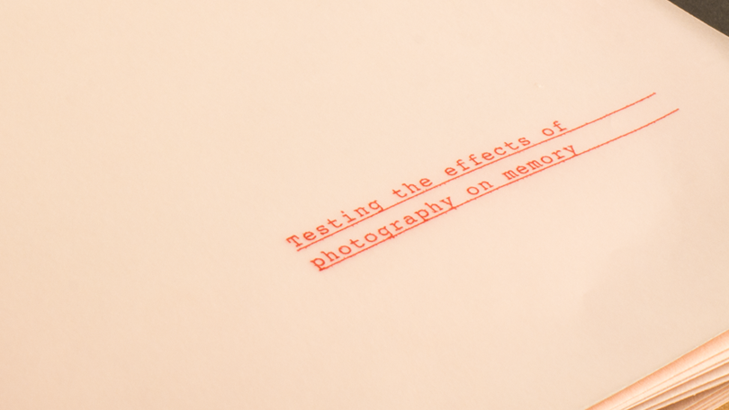
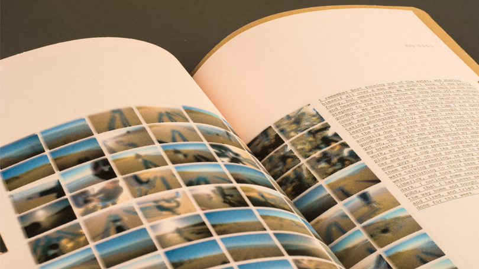
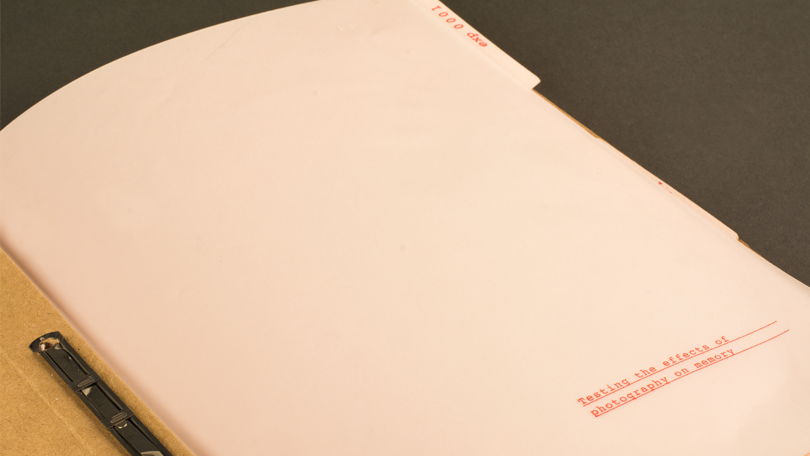
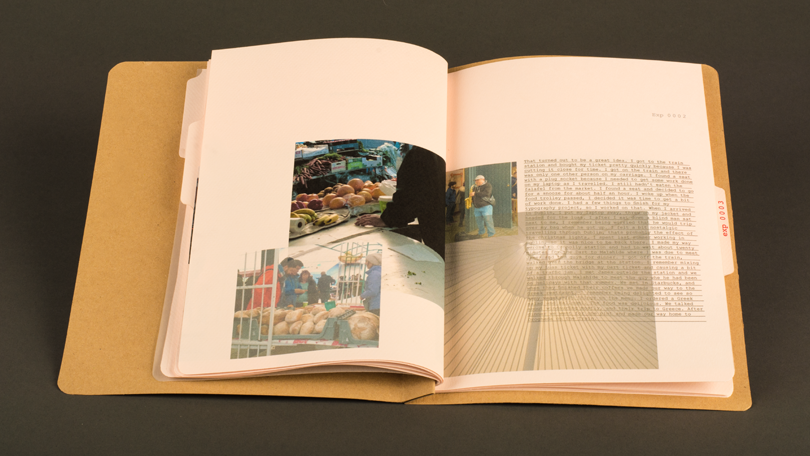

- 
Overexposed
Photography, Print,
- A project based around memories.
- Are we photographing More and experiencing Less? This project explores the idea that we are experiencing less as we record more. It encourages you not to stop taking photographs, as they can be a halpful memory aid, but to be more mindful of the photographs taken. The book features three memory experiments. no photography, mindless photography and mindful photography.
- 
- 
- 